Madison Colvin
Interactive Information Visualization
Production Across the Globe

Project Overview
My Interactive Information Visualization course culminated in a final group project where we were to explore a meaningful topic and leverage optimal encodings to express our findings effectively. In this course we used D3, a JavaScript library, to create interactive and informative data visualizations. Throughout the course we worked with large datasets and transformed the raw data into meaningful and user-friendly data based graphs and visuals. My team, a group of five individuals, chose to explore the socioeconomic impact on food production across the globe as our final project topic.
To implement this project, we merged various existing datasets via JavaScript to create cohesive and usable data. From these pieced together datasets, we explored existing relationships, calculating the mean, median, and standard deviation between key variables in our dataset. After discovering existing relationships in our chosen datasets, we constructed interactive data visualizations to bring our findings to life.
The following information is a summary of our key findings that discuss and highlight key insights. Additionally, below are screen captures of our interactive charts and data encodings.
Food Production Across the Globe
Everyone loves food. It is essential for human life and something we all need to survive. Whether it's a gourmet meal or a gas station snack, our food has to come from somewhere. But have you ever stopped to think about where our food actually comes from or how it's produced? Our project hopes to break down questions about global food production and prices by exploring the socioeconomic impact on food prices related to specific regions in order to see how trends in food prices impact different regions. In addition, our project explores how agricultural production varies across the globe in order to understand where the food on our plate comes from.
Crop Yield and Frequency of Production
In order to fully understand the socioeconomic impact on food prices, it's important to first explore how food is produced globally and the scales in which it is produced. The graphic below visualizes the relationship between crop yield and frequency of production for various food items produced across the globe.
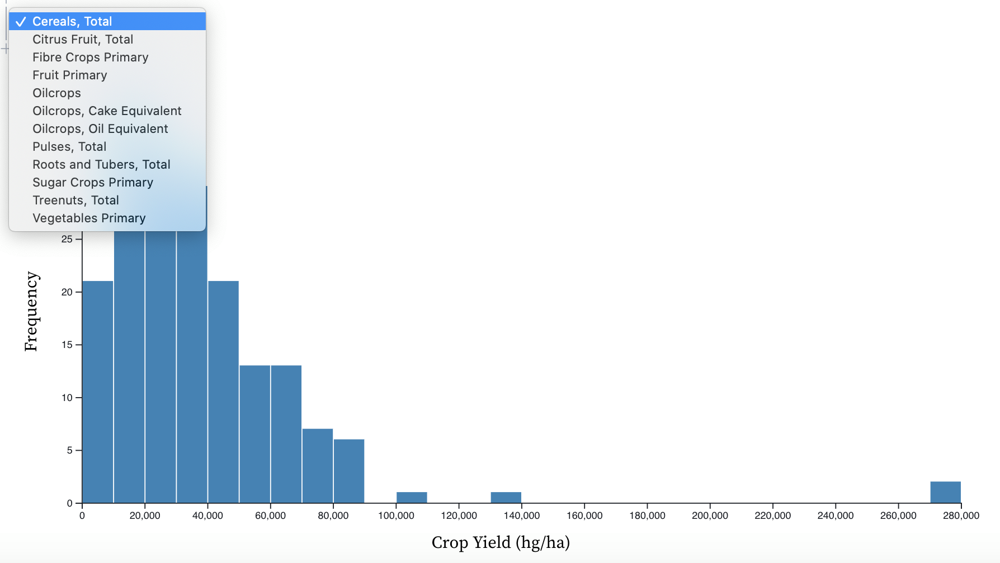 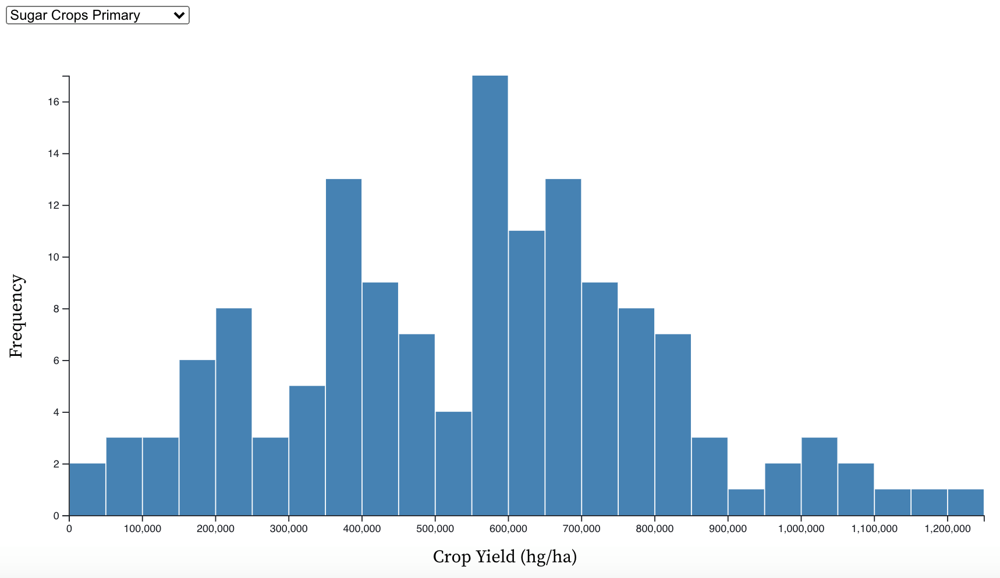Crop Production Type Around the Globe
Before beginning to answer the socioeconomic impact on food prices, it's vital to understand what types and the quantities of foods are currently being produced across the globe in order to understand where our food comes from.
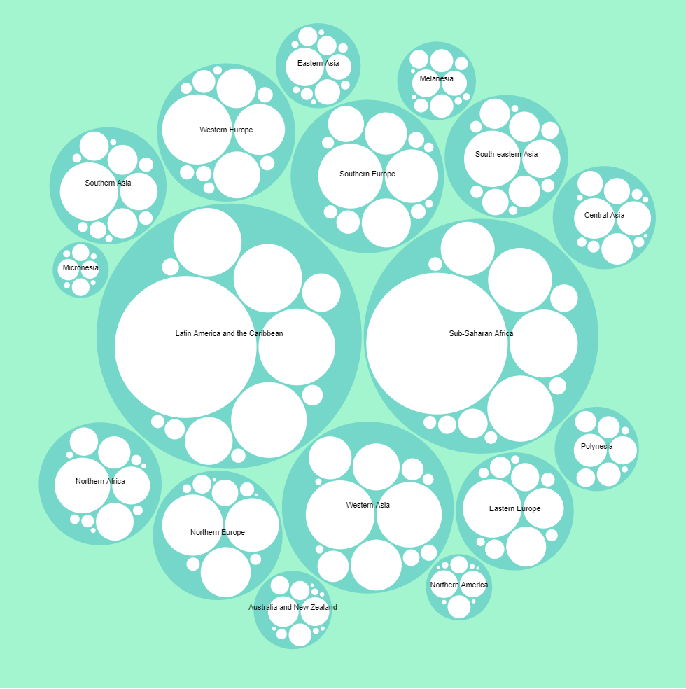 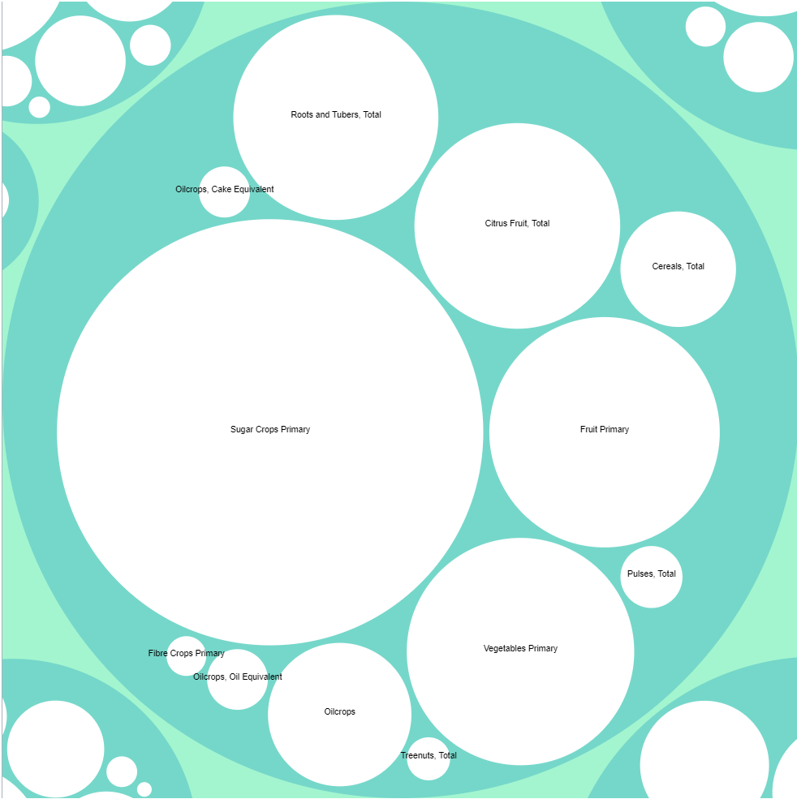
The above graphic explores crop production by region. Each circle's size corresponds to the quantity of
food production in the region. To interact with the visualization and view additional details
viewers could click on any region to explore further. Once the region was
selected, the visualization expanded to show the most and least commonly produced
food items in that specified region. From this visualization, we can see that Latin America and
the Carribean and Sub-Saharan Africa account for the largest share of global food production.
Within each of these regions, sugar crops are most commonly produced food.
Undernourishment
A key part to understanding the socioeconomic impact of food is investigating the prevalence of undernourishment (hunger) in various regions. Typically undernourishment is considered in two ways: percent or measured value. For our chart, we looked at measured value instead of percent. This is because we think it is more important to see how many undernourished people there are in each sub-region, as opposed to percent. This type of comparison seems more reasonable, as it suggests that a hungry person in one subregion is equal to that in another. If we were to instead use percentages, a hungry person in one sub-region may carry more weight than in another due to the overall population size. By using true value, we can see the top 10 regions where there are the most undernourished people, and therefore the regions that need food assistance the most. It must be noted that Eastern Asia and Eastern Europe were not included due to not having data for all years.
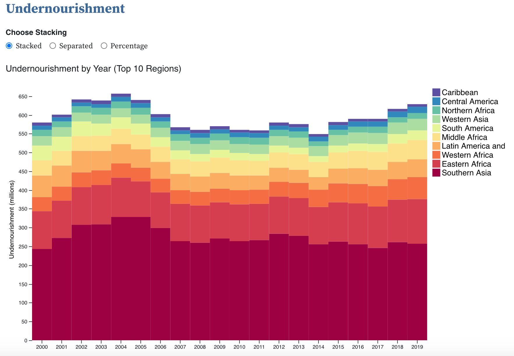 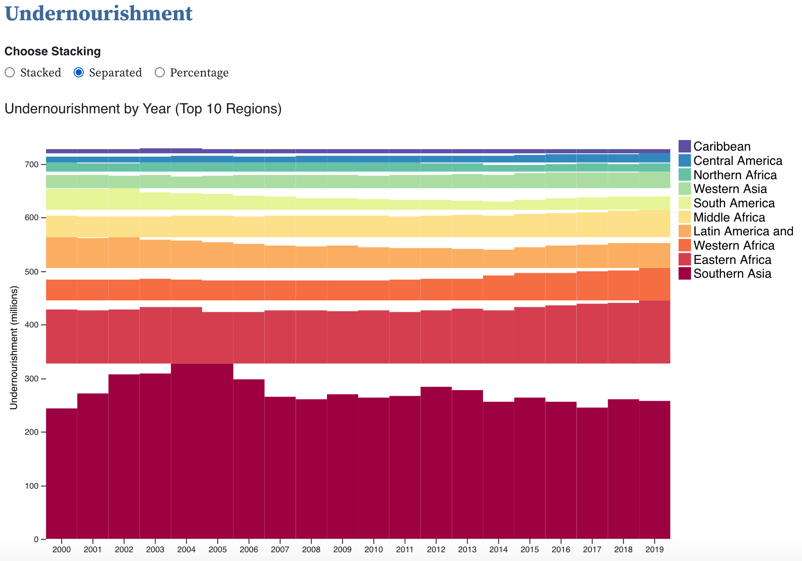 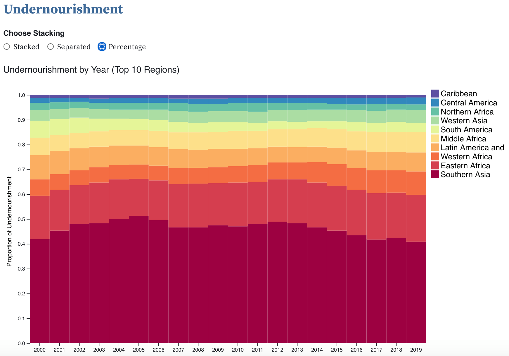
For the presentation of the chart, you select the encoding to be stacked, seperated or percentage. We used
this method because the stacked style uses length encoding while the separated style uses position. Therefore,
the separated style helps investigate change over time for a specific sub-region. A tool tip was also added for
ease of understanding; this is especially helpful for the separated style since the values on the y-axis do not
reflect the value of a bar.
Production of Food vs. Average Cost for Two
One statistic that may be more obvious or directly relatable to people is the average cost of a meal from a restaurant, so we plotted the relationship between the average meal cost for two people in USD for the countries we could find data on with the countries' total crop production in tonnes.
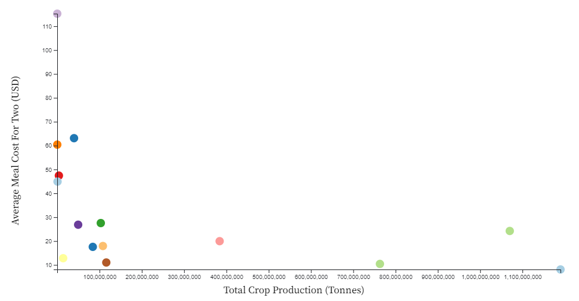
To see if there was a relationship between total crop production and the average cost of a meal for two, we graphed
the each country we found data on as a scatter plot. While we could not find more countries' restaurant data to plot,
we see a general trend that countries that generate higher crop productions have lower average meal costs. For example,
India, which produces the most total crops in this dataset, also has the lowest average meal cost for two people.
The visual we created allowed the user to hover over each data point to reveal which country each point represents, as well as other interesting data like the average rating of restaurants (a scale of 1 to 5) and the average price range rating (a scale of 1 to 4 with 4 being the most expensive).
Food Price Inflation
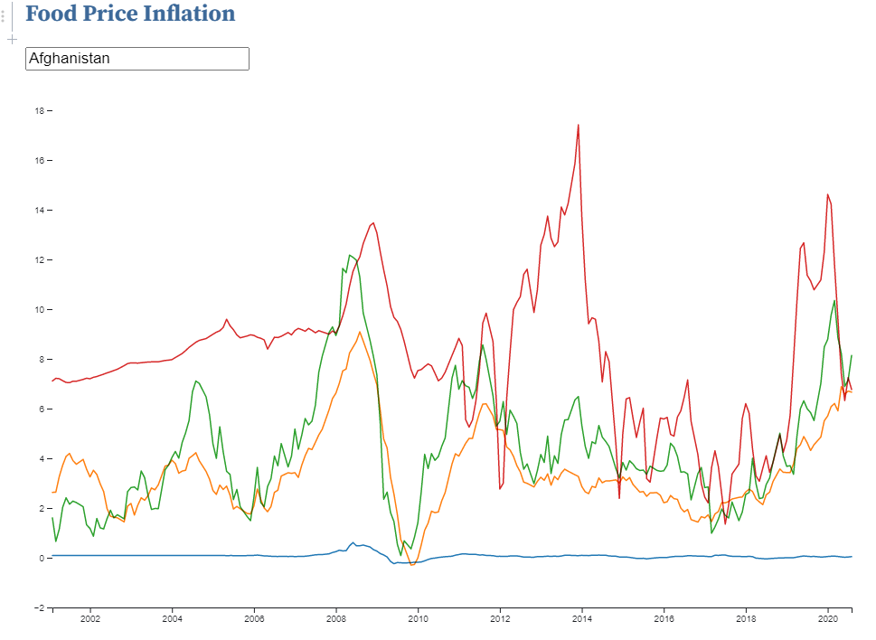
The food price inflation index helps us better understand the economics of the food industry over time.
From the inflation index, we are able to investigate whether prices of food are dramatically increasing,
and consequently lowering purchasing purchasing power for individuals. When there are high levels of inflation,
but wages are not increasing at an equal rate, then individuals are not able to purchase as much. This has extreme
consequences for food, as it is necessary for survival.This chart, therefore, explores food price inflation specifically.
While it is difficult to make overarching generalizations due to the sheer number of countries, the chart is designed to drill down into specific countries. By selecting a country, you can investigate what the food price inflation has been like over time, and compare it to the sub-region and region its in, as well as the world. For most countries, however, it's observed that food price inflation is generally stable, while greater instability is observed for larger groupings (sub-regions, regions, and world).
Trade Balance
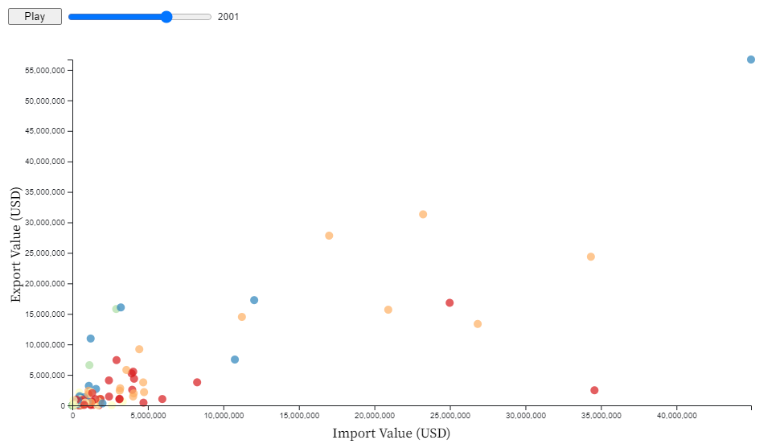
Trade balance is also important to understanding the economics of food. For exports, it demonstrates that the country
is able to make money from other countries by exporting food. For imports, it shows that the country must pay other
countries to import food. Though, that does not necessarily mean having more exports than imports is always preferential.
That's because a country may produce products in other industries, which may be more beneficial to their economy.
Additionally, a high import value may demonstrate a company has high levels of revenue from other industries so
that they can purchase food from other countries.
To investigate this relationship, our chart allows users to select the year so that they can see the relationship between exports and imports in a given year. Points when hovered show what country it represents, and highlights other points in the same region to allow for exploration of regional trends. Through the chart, it is observed that there seems to be approximately a linear relationship. Additionally, it can be seen that both export and import value increase over time, though the importance of this should be qualified as the values are not adjusted for inflation.
Consumption
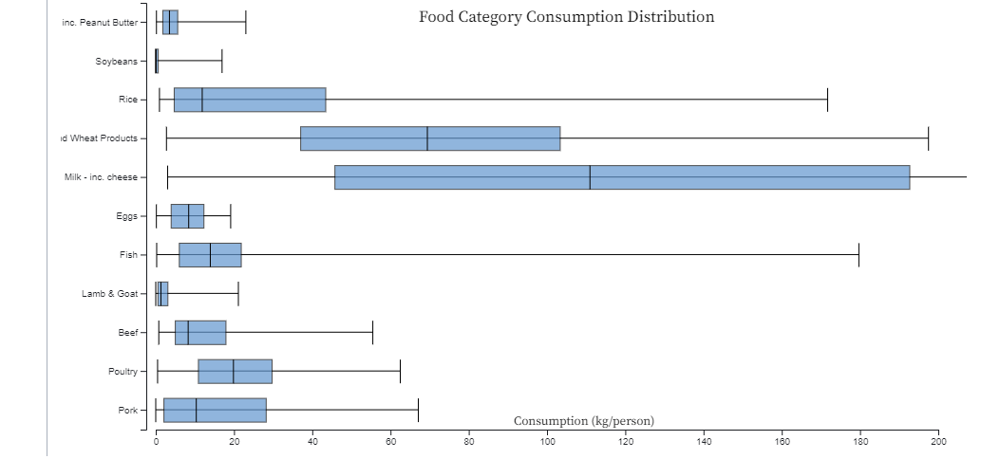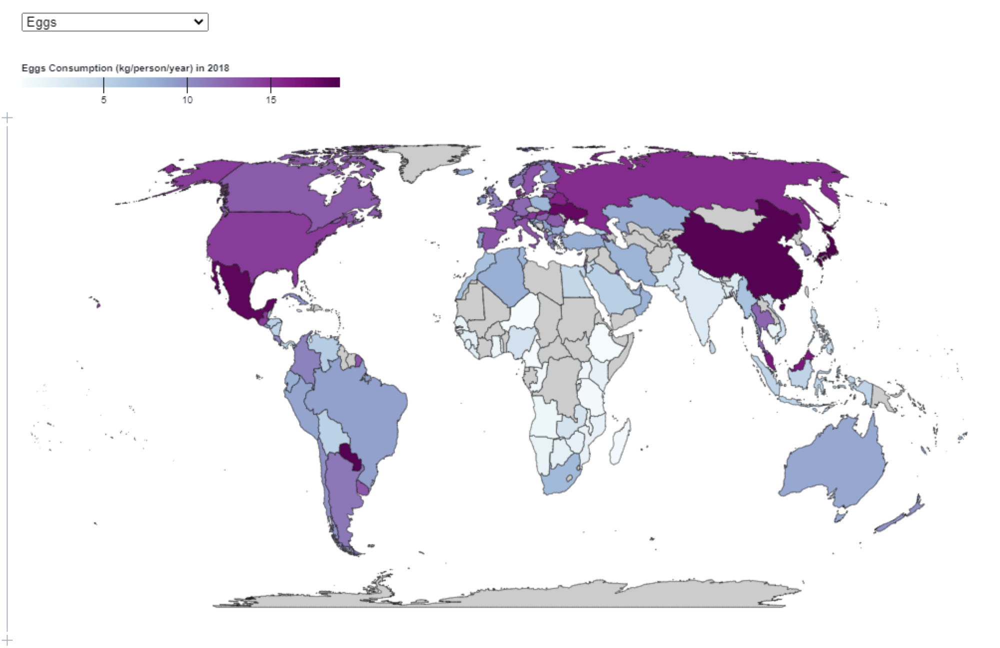
This map provides a holistic overview of how much of a specific food category people around the world consume in kg per person for the year 2018.
Consumption has direct relationships with other factors such as price, health, and crop yield. It's also just interesting to see how much food we
each consume per person in a year! With the boxplots shown above the map, we can see the distribution of consumption for each food category;
the map was not sufficient enough in comparing the overall consumption as the range of consumption differed drastically between categories.
Looking at the highest consumptions, we can see that products like dairy and grains have the highest consumption, which also tend to have
the cheaper prices across the globe, showing the relationship between cost and consumption.
It is important to note that this map shows the consumption per person in each country, so for countries with a substantially higher or lower population, the data may be a little skewed. It does not show the total consumption in kg for the entire country. Also, for the boxplot, the x-axis only goes up to 200 because the dairy max was a bit of an outlier.
Conclusion
Through our visualizations, we aimed to tackle questions about where our food comes from, how its produced, and global socioeconomic impacts. We graphed data about different types of food and identified what regions specific types of food are coming from in order to provide a better idea of what countries are leading producers for certain crops. To understand the socioeconomic impacts, we considered undernourishment in different regions and also explored the impacts of food production on meal cost. Additionally, we focused on the economic factors of food production, like food price inflation and countries' import and export data. The visualizations were created to display valuable information in a way that is easily interpretable and to provide new insights into food from a global perspective.